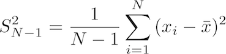
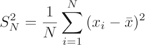
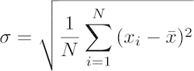
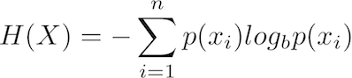

Translate equations to R
by Damir Cavar (March 2010)
In this section we will take a look at how to translate some typical equation into R. Let us start with the formula for variance:

The LaTeX code for the equation is: S^2_{N-1}=\frac{1}{N-1}\sum_{i=1}^N{(x_i - \bar{x})^2}
What this formula says is the following:
a. Given a vector of values (some experimental results or measures) of length N, for example:
x <- c(1, 2, 4, 5, 6, 8, 9)
In this case, x is of length 7, that is N = 7, which can be verified by using the following function in R:
length(x)
b. for each value, from the beginning (index position i = 1), to the last element (index position i = N = 7),
subtract the arithmetic mean of the distribution from this value, and square the result:
The arithmetic mean of the distribution can be calculated using:
mean(x)
The subtraction and squaring can be calculated as:
(x - mean(x))^2
The resulting vector for x as defined above should look like:
16 9 1 0 1 9 16
c. sum up all the resulting values, and divide the result by (N - 1).
Summing up the values in a list can be achieved by using the function sum():
sum(x)
The output for x as defined above should be:
35
To complete our calculation using steps a. and b., the formula so far should be translated as:
sum( (x - mean(x))^2 )
The output of this calculation for the defined x should be:
52
The final step is to divide this part of the calculation result by N, which is the length of x reduced by 1:
sum( (x - mean(x))^2 ) / (length(x) - 1)
The resulting value:
8.666667
is the variance of the measures in x, as defined above.
We can define this calculation as a function, and store it in some external file for reuse. A function can be defined in the following way:
s2variance <- function (x) { sum( (x - mean(x))^2 ) / (length(x) - 1) }
s2variance is now defined as a function that takes one parameter, i.e. a vector of values, measures or results. The returned value is the variance of the distribution, as explained above. For example:
s2variance( c(3, 5, 1, 1, 2, 1, 0, 4) )
should return the value:
2.982143
In fact, R comes with a predefined function for variance calculation, as explained in the previous section (the function var), such that:
var( c(3, 5, 1, 1, 2, 1, 0, 4) )
should return the same value as our own function definition above, i.e.:
2.982143
A variation of this equation is the variance of a population:

The LaTeX code for this equation is: S^2_N=\frac{1}{N}\sum_{i=1}^N{(x_i - \bar{x})^2}
The only difference is that in this function we do not divide by the length of x minus 1, but just by the length of x, as in the following R code:
sum( (x - mean(x))^2 ) / length(x)
Let us consider now the equation for the Standard deviation:

The LaTeX code for this equation is: \sigma = \sqrt{ \frac{1}{N} \sum_{i=1}^N{ (x_i - \bar{x})^2 }}
This equation is just the square root of the population variance. The corresponding R code is:
sqrt( sum( (x - mean(x))^2 ) / length(x) )
To declare this code as a function for storage and reuse, just wrap it in a function declaration as:
sdd <- function (x) { sqrt( sum( (x - mean(x))^2 ) / length(x) ) }
and use it as follows:
sdd(x)
which should return:
2.725541
Let us consider a random variable X, represented here as a vector with probabilities:
x <- c(0.1, 0.3, 0.15, 0.25, 0.01, 0.08, 0.01, 0.06, 0.04)
The vector x in this case is a complete list of event probabilities, such that the sum of all probabilities in x is equal to 1, as can be verified with the following R code:
sum(x)
Now, the (Shannon) entropy H(x) is defined as:

The LaTeX code for this equation is: H(X) = -\sum_{i=1}^n{p(x_i)log_b p(x_i)}
The equation says that all probabilities of events for the random variable X have to be multiplied with the logarithm of them, summarized and multiplied by -1. We use here the logarithm to the base of 2, which is in R:
log2(x)
Thus, given that the vector x contains probabilities, the multiplication of each single probability with the log to the base of two of it, is in R:
x * log2(x)
For x as defined above, the resulting list should look like:
-0.33219281 -0.52108968 -0.41054484 -0.50000000 -0.06643856 -0.29150850 -0.06643856 -0.24353362 -0.18575425
Summing up the values in the resulting list can be achieved by the function sum:
sum(x * log2(x))
and the absolute value of this summation is returned by multiplying with -1:
-sum(x * log2(x))
By the way, the initial sum is always negative, because the log of a probability is always negative, given that a probability is between 0 and 1.